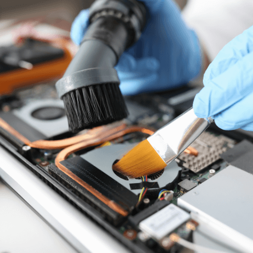
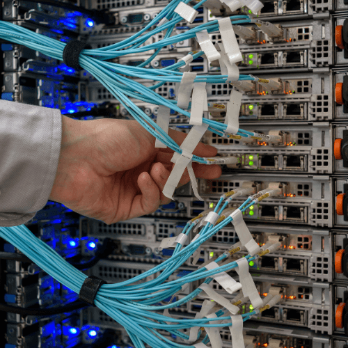

Preventivo, predictivo y correctivo para servidores, computadoras, laptops, impresoras y plotters.
Seguir Leyendo...

Preventivo, predictivo y correctivo para servidores, computadoras, laptops, impresoras y plotters.
Seguir Leyendo...
Cableado estructurado para voz, datos y video. Soluciones para infraestructuras de red eficientes
Seguir Leyendo...Implementación de soluciones para Data Center, incluyendo gabinetes, sistemas de comunicación y UPS, optimizando la gestión y el espacio.
Seguir Leyendo...Sistemas que refuerzan la seguridad en diversos espacios con vigilancia continua, reduciendo riesgos de vandalismo y mejorando la eficiencia.
Seguir Leyendo...